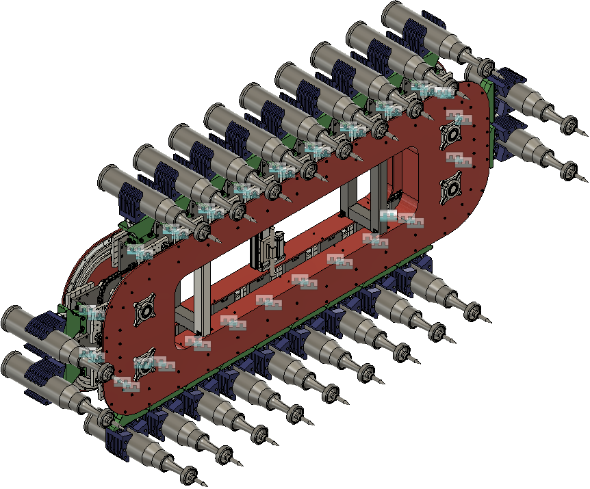
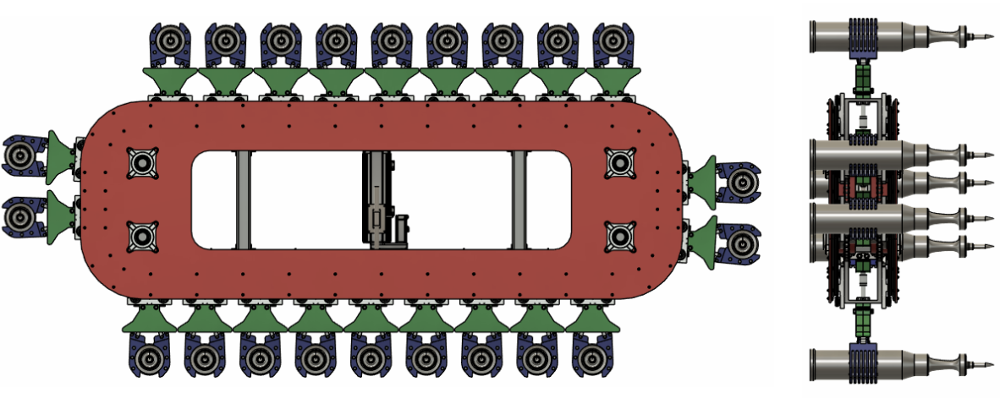
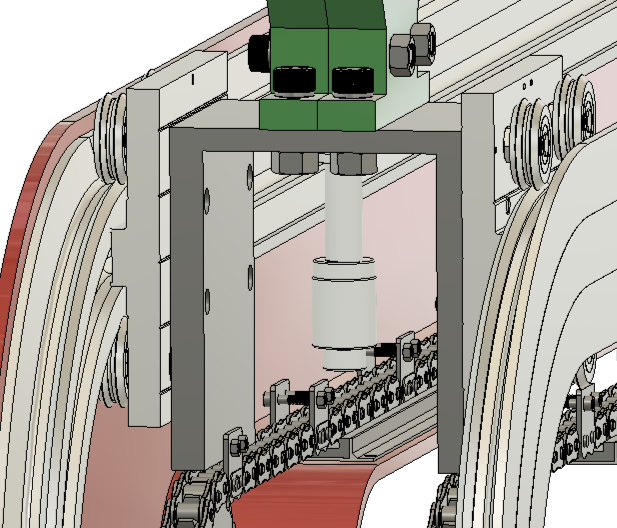


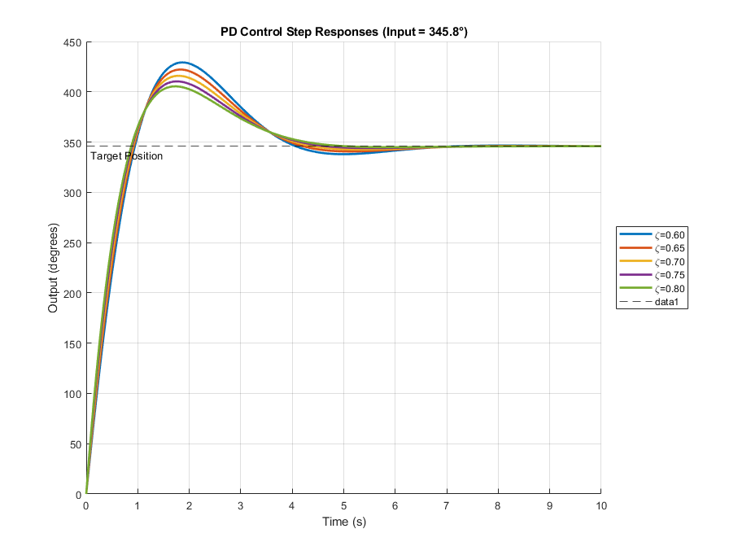
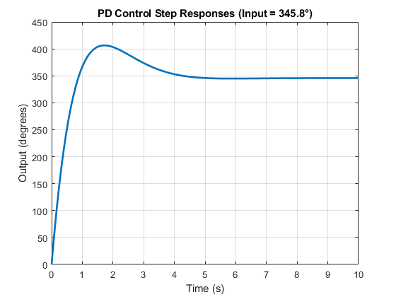
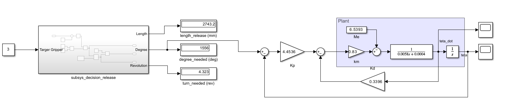
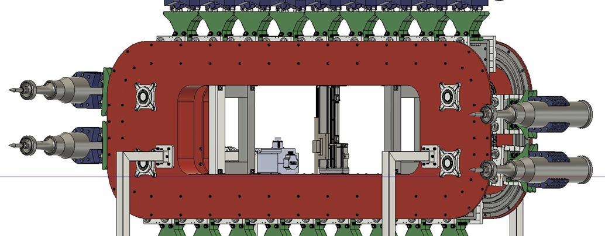

CAD / FEA / Control
Magazine System
My contribution to an automatic loading system design study: connecting the magazine assembly with structural analysis and control modelling.
- My contribution
- Magazine design · Structural analysis · Control modelling
- Status / Period
- Completed · Spring 2025 · Graduation design study
11 min read · Mechanical

The project in context
This four-person graduation project at Işık University explored an automatic loading system for 120 mm tank ammunition. The team developed a magazine, gripper mechanisms and a supporting platform, bringing mechanical design and control into one assembly.
My work focused on the magazine layout, static and transient structural analysis, and the magazine's position-control model. I also contributed to actuator integration and motor selection with other team members.
A completed design and simulation study. The portfolio evidence is CAD, ANSYS output and MATLAB/Simulink modelling. These are the documented project outputs; physical qualification and field operation are not established by the material presented here.
The brief included capacity, packaging, operating-time, inclination, mass and budget constraints. These gave the team a common design framework and connected the magazine layout to the gripper geometry, structural analysis and positioning approach.
My contribution
The work plan separates individually assigned responsibilities from shared tasks:
| Workstream | My responsibility |
|---|---|
| Magazine system design | Main responsibility for the magazine assembly and layout |
| Gripper static and shock analysis | Main responsibility for the ANSYS structural studies |
| Magazine component static and shock analysis | Main responsibility for the component-level structural studies |
| Control system | Main responsibility for the MATLAB/Simulink control model |
| Linear actuator mechanism | Shared with Adam Abdelnaby |
| Motor selection | Shared with Selen Ceyran |
Research, manual calculations, cost analysis and final documentation were shared across the team. The gripper's original mechanical design, locking mechanism, general material selection and platform design had separate owners; I worked with those outputs as part of the integrated project.
My involvement developed from the early structural studies into magazine design, actuator placement and then control-system modelling, as documented in the project's meeting records.
Magazine system design
My main design responsibility was the magazine assembly: arranging the team's grippers within the available space and bringing the supporting, guiding and driving components together in CAD. The thesis describes a 22-position magazine, so the assembly had to accommodate repeated gripper units as well as their connections and the actuator interface.
From the gripper geometry to the assembly
The starting point was the gripper envelope developed by the team. I used that geometry to establish the magazine layout and the relationship between adjacent carriers. The resulting model combined the frame, chains, attachments, track-roller carriages and guide rails.
The CAD work progressed from individual connections to the complete assembly. Component views explained how a carrier connected to its support and the chain, while the overall views showed the arrangement of the repeated units. Both levels of detail appear in the thesis.


Connecting the component interfaces
The carrier arrangement linked three parts of the model: the gripper case, the guiding components and the chain attachment. The thesis documents these interfaces through assembled and exploded views. This part of the work connected the overall packaging task to the individual components later examined in ANSYS.


I also worked on the actuator's placement within the magazine, in collaboration with the actuator workstream. The completed CAD assembly provided the geometric reference used across the project's design, analysis and documentation.
Gripper static and shock analysis
I was responsible for the gripper's static and transient structural studies in ANSYS. The gripper geometry came from the team's design work; my contribution was to examine its response under the loading cases documented in Section 6.5.
Comparing the reported load cases
The study considered different gripper orientations within the magazine and presented the associated supports and loading directions. Static cases were followed by shock cases in different directions. The results were organised by case, making it possible to distinguish the effect of the loading arrangement within the reported model.
Each analysis included equivalent von Mises stress, total deformation and a yield-based factor of safety. The following examples come directly from Table 12:
| Gripper case | Maximum equivalent stress | Reported factor of safety |
|---|---|---|
| Static — case 1 | 2.893 MPa | >15 |
| Static — case 2 | 29.113 MPa | 8.9 |
| Shock — case 4 | 52.724 MPa | 4.916 |
These are selected simulation outputs. A reported “>15” is retained as the table presents it, rather than converted into an exact safety-factor value.


Reading the result as a component response
The thesis identifies the Y-direction shock cases as important in the gripper comparison. In the selected figure, the stress contour shows the distribution within the model, while the deformation and safety-factor panels provide the accompanying response measures.
My output was the set of structural simulations and their documented comparisons. The selected value of 4.916 belongs to case 4; it is not presented as the lowest value for every case or for the complete system. The thesis references MIL-STD-810H for its shock-analysis work, while the evidence shown here remains simulation evidence.
Magazine component static and shock analysis
The magazine analysis extended beyond the gripper to its supporting components. My assigned work covered the static and shock studies for magazine parts, with Section 7.2 documenting the track roller and the bolts associated with the U-support.
Track roller and support connections
The thesis presents a separate track-roller model, its boundary conditions and the response under static and directional shock cases. It then examines the support connections separately. This separation is important because the component, material and loading arrangement differ between the models.
The reported results were brought together in Table 14. The selected rows below retain the original component names and case numbers:
| Component and case | Maximum equivalent stress | Reported factor of safety |
|---|---|---|
| Track roller — static, case 1 | 2.69 MPa | >15 |
| Track roller — shock, case 2 | 51.341 MPa | 5.048 |
| U-support bolts — static, case 5 | 87.93 MPa | 7.41 |
| U-support bolts — static, case 6 | 99.02 MPa | 6.58 |


Documenting the analysis scope
This work produced component-level evidence alongside the assembly model. The CAD views explained where a part belonged, and the ANSYS figures showed the response of the particular model being evaluated.
The distinction also matters when summarising the project: the roller's reported factor of safety cannot be used as the result for the entire support assembly. My contribution was to carry out and document these separate studies within the magazine workstream.
Control system
I developed the magazine's position-control model in MATLAB and Simulink. This work connected the mechanical arrangement to a simulated motor-position response, using the modelling approach documented in Section 9.
From a selected position to a model reference
The thesis describes an input identifying a target gripper, followed by a conversion into travel and angular-reference values. I represented this reference-generation logic in MATLAB and incorporated it into the Simulink model.
The next part of the work was the rotation-to-translation model. The analysis brought together the motor parameters, load contribution, equivalent inertia, estimated friction and the mechanical conversion. Motor selection was a shared task; developing the control model was my individual work-plan responsibility.
Comparing the PD responses
The model used closed-loop position feedback with a proportional-derivative controller. MATLAB was used to compare the responses for the damping ratios examined in the thesis, and the results were plotted against the reference position.


The reported comparison covered damping ratios from 0.6 to 0.8. The thesis selected the 0.8 response, describing lower overshoot than the other plotted cases. My work included producing this comparison and documenting the chosen response within the model.
View the selected response


Expressing the model in Simulink
Simulink brought the reference, controller and plant representation into a connected block model. The thesis includes the overall diagram and the reference-generation subsystem, alongside the MATLAB code used for the calculation and response plots.


The control deliverables were the reference logic, mathematical model, response comparison and Simulink implementation. The project's timing requirement guided this work, but the simulated response is not a measured operating cycle for a complete physical system.
Linear actuator mechanism
This was a shared responsibility with Adam Abdelnaby. My contribution included the actuator's placement within the magazine and its integration with the assembly, as recorded in the work plan and the meeting notes.
Selection criteria and assembly integration
The actuator section of the thesis considered load capacity, stroke, force output, positional accuracy, structural robustness and compatibility with the surrounding system. These criteria were recorded in a comparison matrix as part of the shared workstream.
The integration study then placed the actuator within the magazine frame and documented its relationship with the team's locking mechanism. The thesis includes mounting and assembly views, as well as discussion of stroke clearance, interference and mounting conditions.


My part in the shared task
The meeting notes identify actuator placement and magazine finalisation among my tasks. This links my contribution directly to the assembly work, while the broader actuator mechanism remained a joint responsibility.
The resulting output was a documented integration within the CAD assembly. It also provided an interface between the magazine design and the separately developed gripper-locking mechanism.
Motor selection
Motor selection was a shared responsibility with Selen Ceyran. The meeting records document my involvement in main-motor selection and calculations, followed by the development of the control model.
Connecting mechanical requirements to the motor study
Section 9.1 sets out the main-drive calculations using the chain-pull result from the wider team analysis. It then considers the motion requirement, transmission geometry and efficiency in documenting torque, speed and power requirements.
The calculation categories in the thesis can be summarised as follows:
| Part of the study | Documented purpose |
|---|---|
| Pulling-force input | Carry the mechanical-load calculation into the drive study |
| Torque calculation | Describe the drive demand associated with the mechanical load |
| Motion and speed calculation | Relate the travel requirement to rotational motion |
| Power calculation | Combine the torque and speed requirements |
| Motor parameters | Supply the parameters used in the subsequent control model |
These calculations formed part of the shared motor-selection work. The thesis records a selected main motor and uses its parameters in the modelling that follows.
Carrying the selection into control modelling
The connection to my individual work was the use of the selected motor's parameters in the rotation-to-translation model. Rotor inertia, torque constant and the other documented model quantities became inputs to the MATLAB/Simulink study.
This kept the motor-selection task connected to both the mechanical work and the control section. My contribution included the shared selection and calculation stage, followed by responsibility for developing and presenting the simulated position response.
Outcomes and reflection
My contribution connected three parts of the design study: a magazine assembly model, structural evidence for selected components, and a simulated position-control response. The thesis and meeting records document both the individual work and the interfaces with other team members.
| Output | Evidence presented |
|---|---|
| Magazine design | CAD assembly and integration views |
| Structural analysis | ANSYS figures and selected thesis table results |
| Control modelling | MATLAB response comparison and Simulink model |
The project gave me experience working across mechanical design, simulation and control within a shared engineering brief. It also required clear communication: an assembly view explains the geometry, an analysis case explains a component response, and a control plot explains behaviour within a model.
The completed deliverable was a graduation design package. Its strongest evidence of my contribution is the connection between the assembly I developed, the component analyses I carried out and the control model I documented.
Source: “Design of an Automatic Loading System for 120 mm Tank Ammunition,” MECH/MECT4902 graduation thesis, Işık University, Spring 2025. Contribution attribution follows Section 4, Work Plan, supported by the appendix meeting records. Selected technical material comes from Sections 6.5–6.9, 7.1–7.3 and 9. Supervised by Erkin Dinçmen.
Tools & methods
- SolidWorks
- ANSYS Static Structural
- ANSYS Transient Structural
- MATLAB
- Simulink
- Mechatronics